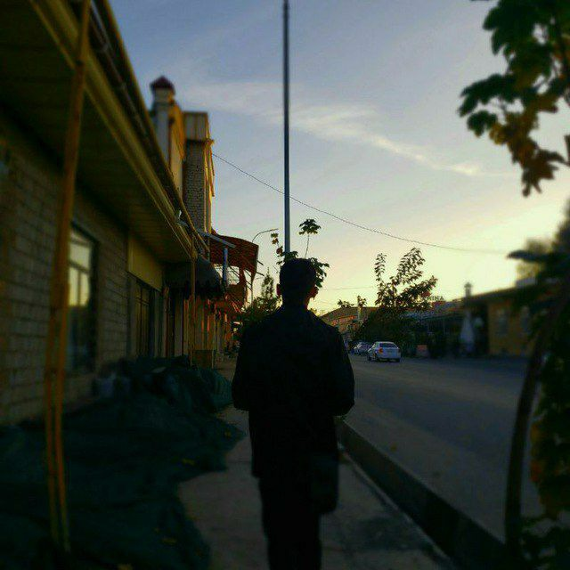

Hi, I'm tojik_proof_93
I'm a
I am an ordinary person who likes things related to technology and happens to be lucky to have a little experience about technology and others. Even though I only learned using autodidactic methods because of a reason that required me to do so :)
See More